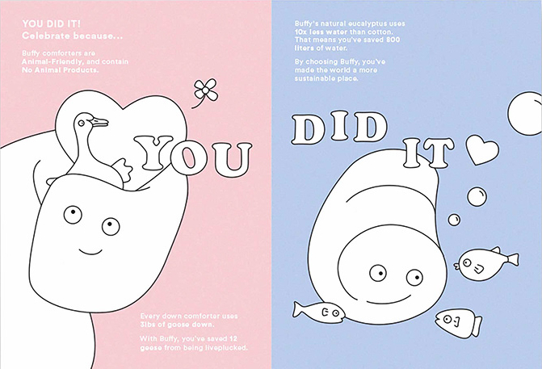
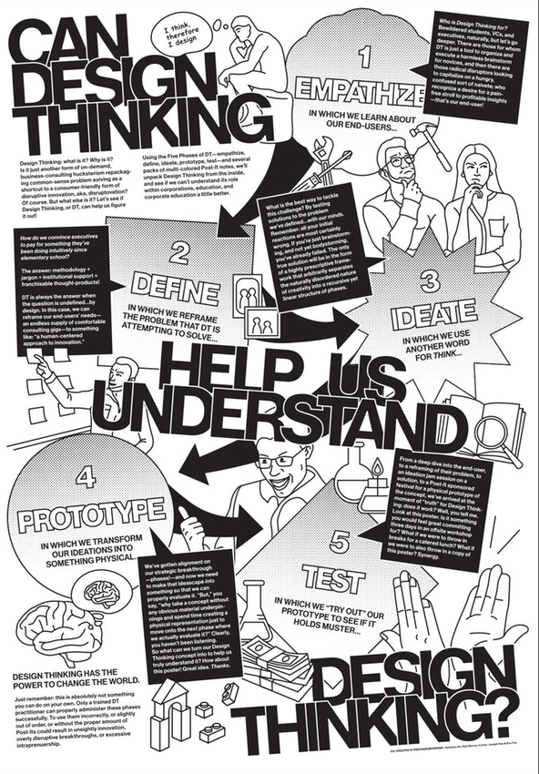

Why does Natasha Jen have an issue with the concept of Design Thinking?
Introduction
This essay will explore the concept of design thinking and how Pentagram partner and designer, Natasha Jen has an issue with it. I will begin by exploring who Natasha Jen is, her education and work. It will also examine what “Design Thinking” actually is and what issues Jen has raised surrounding the concept of “Design Thinking”. The main focus of this essay however, will be understanding why Jen has raised these issues with the concept of “Design Thinking” and what she proposes as a solution.
Who is Natasha Jen?
Jen was born in Taipei , Taiwan in 1976 where she lived for 20 years until she moved to New York city to study fine art at the School of Visual Arts in 1996. After some time , Jen realised that fine art wasn’t what she wanted to pursue and began to look into different options. Eventually Jen chose to study Graphic Design at the School of Visual Arts where she completed her studies and received her BFA with Honours in 2002. During her studies Jen interned with a studio called Eric Baker Design and also with Pentagram where she is currently a partner since 2012.
Jen’s first full time job after finishing her studies was at Sony Music where she designed covers for CD’s , although this work did not satisfy her so she only stayed for 6 months before leaving to work for Base design as a Senior designer on fashion and brand identity. Jen then went on to work for 2 x 4 Inc. as an art director where she lead large scale branding , environmental , editorial and exhibition projects. Jen also worked at Stone Yamashita Partners as a creative director before going on to open her own studio , Njenworks in July 2010. Eventually in 2012 , Jen joined Pentagrams New York office as partner in April 2012.
What actually is Design Thinking?

Design thinking is defined as a process which is applicable to all walks of life , of creating new and innovative ideas and solving problems. Design thinking is not limited to a specific industry. Design thinking is broken down into five core steps , these steps are used to solve any problem , empathise , define , test , ideate and prototype. interaction-design.org mention that “Design thinking provides a solution-based approach to solving problems. It is a way of thinking and working as well as a collection of hands-on methods.” Christina Wodtke is a designer who when she first heard about Design Thinking , she didn’t think it was anything special , but over time she felt that design thinking , for her , works better than other approaches to product and service innovation.
What is the problem and why?
Jen notably has an issue with the concept of “design thinking”. Jen explains that the problem starts with “design thinking’ being an intangible thing that is impossible to describe. Jen states “I just can’t wrap my head around design thinking , and I ask myself why can’t I understand it? The more I get into it , the more outrageous it appears”. ( “why design thinking is bullshit” itsnicethat.com) The first issue Jen raised with the concept of “design thinking” is its simplicity. How can this “one size fits all” approach be applied to everything? Jen argues that if we follow this five step process, there is a crucial step missing that should be used in between prototyping and testing. Jen believes that this new step should involve sitting down with a group of people where everyone will analyse and critique a piece of work so that it can be improved upon before it is released to the public.
In her talk titled “Design thinking is Bullsh*t” for Adobe 99U, Jen described design criticism as “ You bring forth an idea. You bring forth evidence and then everybody crit’s the heck out of it. And that’s when you can make improvements, right?” (Adobe 99U)Jen believes that in order for us as designers to improve upon our work we must receive criticism and take into consideration what others are saying or thinking about our work and then apply these thoughts to our own ideas. I agree with Jen’s beliefs surrounding design criticism as I have used this idea in my own work and it has helped me improve upon a design by taking into account what those who were looking at my work were saying.
In the same talk, Jen also explained what she defines design thinking as, how she feels that design thinking “packages the designers way by working for a non - designer audience, by codifying their processes into perspective , step by step approach to creative solving.” (Adobe 99U) In other words, design thinking restricts a designers creative approach to a step by step structured process which must be followed in order for it to be considered “design thinking”. It therefore doesn’t allow designers the same amount of creative freedom they would normally have if they were not following design thinkings step by step process. Jen has expressed that she has another problem with design thinking, and this time it isn’t design thinking as a theory, its the fact that she had not heard “a voice or much voice from the design community to actually try to reshape this conversation”. (Adobe 99U) Jen is one of the only designers in the industry to express her views on design thinking , although there are some other designers who agree with her and share the same opinion.
Designers Who both agree and disagree with Jen’s ideas
Lee Vinsel is another designer who believes that the Design Thinking movement is absurd. He has expressed on medium.com that he agrees with Jen’s views surrounding design thinking. Vinsel explains how he feels as if design thinking is an idea which is too vague , and the further you delve into the idea of design thinking , the vaguer the entire theory becomes. I agree with Vinsel as I find Design Thinking very difficult to understand , I don’t understand how it can be applied effectively to different concepts and produce a positive end result. Surely Design Thinking cannot be successful in every circumstance.
Hannah Kim also expressed her view on design thinking on medium.com. Kim explains that after she watched Jen’s “Design thinking is Bullshit” talk with Adobe 99U she could understand why Jen had these views on Design Thinking. Kim stated that she thinks the reason that designers like herself and Jen have a hard time accepting design thinking , is because they think about design in a traditional sense , where sketching and photoshop are seen as their tools, not post it notes, which are commonly used when design thinking is being put into practice. Although Kim agree’s with some of Jen’s ideas , she disagrees with Jen’s argument that Criticism is missing from the design thinking process , Kim believes that the criticism can happen in the prototyping and testing phase. For me , I can see where Kim is coming from with this idea , but I feel that it is not made clear enough for those following the Design Thinking theory that criticism can take place during the prototyping and testing phase.
Conclusion
In conclusion Natasha Jen believes that design thinking is an intangible thing which is impossible to describe , and if we cannot describe an ideology which is meant to help us , how can we utilise it in a way which will result in a positive outcome? Jen believes design thinking is too vague and other designers have agreed with her on this criticism such as Vinsel. Jen also believes it is impossible to use a one size fits all approach when it comes to designing , therefore rendering the idea of design thinking useless as it suggests a one size fits all approach. A Critique session is also missing in the process of design thinking , which Jen see’s as a huge disadvantage as in order for a design to be successful it needs to be critiqued in order for the designer to improve their work and perfect it. All of these factors contribute to Jen’s issue with design thinking.
| Author | Article Title | Website Title | Website URL | Date of Publication |
|---|---|---|---|---|
| Hannah Kim | Thoughts on Design Thinking From a Designer | Medium | https://medium.com/@1826db/thoughts-on-design-thinking-from-a-designer-ff8e9d0c9941 | September 24 , 2017 |
| Lee Vinsel | The Design Thinking Movement is Absurd | Medium | https://medium.com/@sts_news/the-design-thinking-movement-is-absurd-83df815b92ea | November 26, 2018 |
| Christina Wodtke | How I Stopped Worrying and Learned to Love Design Thinking | Medium | https://medium.com/@cwodtke/how-i-stopped-worrying-and-learned-to-love-design-thinking-f1142bab60e8 | August 26 , 2017 |
| Into the Gloss | Designers Have The Most Organized Beauty Stash | Into The Gloss | https://intothegloss.com/2019/06/natasha-jen-pentagram-interview/ | April 29, 2019 |
| Pentagram | Natasha Jen — Pentagram | Pentagram | https://www.pentagram.com/about/natasha-jen | Unknown |
| It's Nice That | Why Design Thinking is bullshit | It's Nice That | https://www.itsnicethat.com/articles/natasha-jen-pentagram-graphicdesign-230218 | February 28, 2018 |
| The Team | Natasha Jen: Design Thinking Is Bullsh*t | Adobe99U | https://99u.adobe.com/videos/55967/natasha-jen-design-thinking-is-bullshit | May, 2017 |